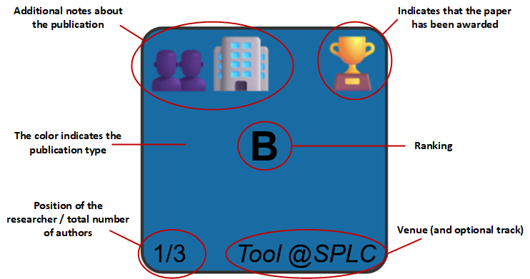

BibTexViz is a tool that transforms .bib files into interactive visualizations for exploring and analyzing research productivity. It offers an intuitive overview of the research publication landscape over the years, allowing users to quickly identify the most significant publications and understand their context.
This web application runs entirely on the client side, requiring no server, and leverages HTML, CSS, JavaScript, and the D3.js library to render the visualizations.
.bib file can help fill in any missing information and improve the visualization.
.bib file is used to extract the researcher's publications.
If this field is not provided, publications are retrieved from DBLP.
If both sources are provided, the .bib file takes precedence over DBLP, allowing you to customize entries and include additional information not available in DBLP.

The type of a publication is automatically extracted from the BibTeX entry and encoded with colors following a schema similar to that used by DBLP.
@book or @phdthesis
@article
@inproceedings
@inproceedings with the Workshop or WS word in the booktitle
@inproceedings, requires scope={national} in the entry (not present in DBLP)
@misc with publisher={Zenodo}
@proceedings
@article with journal={CoRR}, @techreport, @misc, etc.
jcr={Q1}. More detailed information can also be included and will be shown in the publication details, e.g., jcr={Q1 (9/131) Computer Science, Software Engineering. Impact factor: 6.5}, as long as it starts with the quartile.
Non-indexed journals are indicated as jcr={} and appear in the visualization with a -, while if the jcr field is missing, the ranking is considered unknown and shown as ?.
- in the visualization.
- in the visualization. However, you can specify their ranking using a calification BibTex entry. For example, to indicate the rating of a PhD thesis, use calification={Cum Laude}, which will display "Cum Laude" as its ranking in the visualization.
The venue of a publication is automatically extracted from the BibTeX entry and displayed at the bottom-right corner of the square. Its value depends on the publication type:
journal field.
booktitle field.
Book or PhD Thesis, respectively.
journal or booktitle field.
journal or booktitle field has fewer than 25 characters, it is shown as is. Otherwise, an acronym within that field, usually enclosed in parentheses, is searched and used. If no explicit acronym is found, one is generated automatically.
Additionally, if you want to include more details, such as the conference track name or whether it is a short paper, you can use the track field.
At the bottom-left corner of the square, both the researcher's position and the total number of authors are displayed. If the researcher's name is not found in the author field, only the total number of authors is shown.
Awards are extracted from the awards field, where you can list any number of awards separated by commas. In the visualization, two types of awards are distinguished:
awards={Best Paper Award, Best Presentation Award}. In this case, two 🏆 icons will appear in the visualization.
Additional notes about the publications can be added using the note field, where multiple notes can be listed, separated by commas. The following values are supported:
external collaboration: Indicates that at least one co-author belongs to a different institution than the researcher.
industry collaboration: Indicates that at least one co-author is affiliated with a company.
international stay result: Indicates that the publication is the outcome of an international research stay or internship carried out by the researcher.
note={external collaboration, industry collaboration}. In this case, the icons 👥🏢 will appear in the visualization.
For questions, feedback, or bug reports, you can contact José Miguel Horcas by email or open an issue on GitHub.
📧 Email 🐙 GitHub Issues